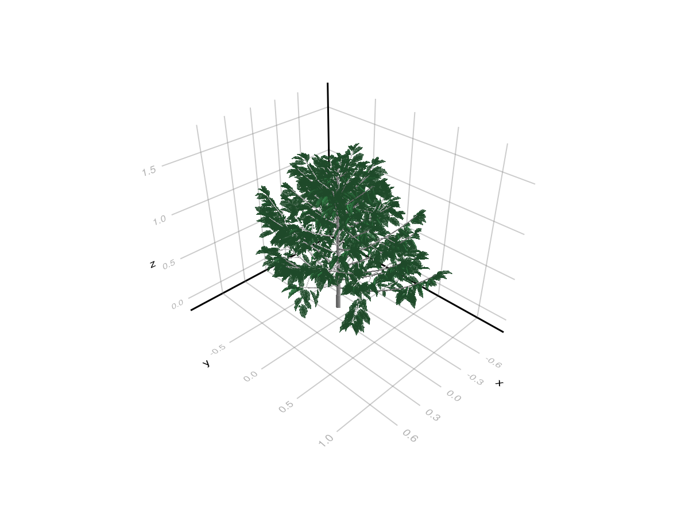
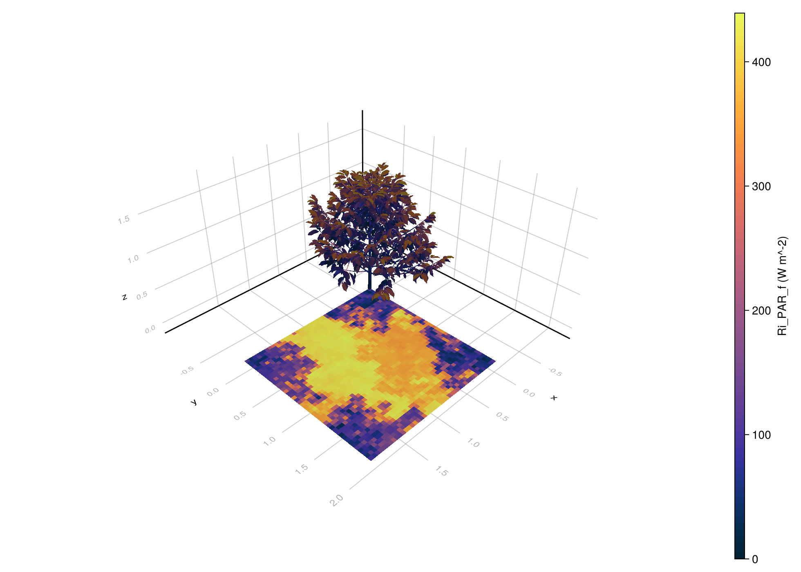
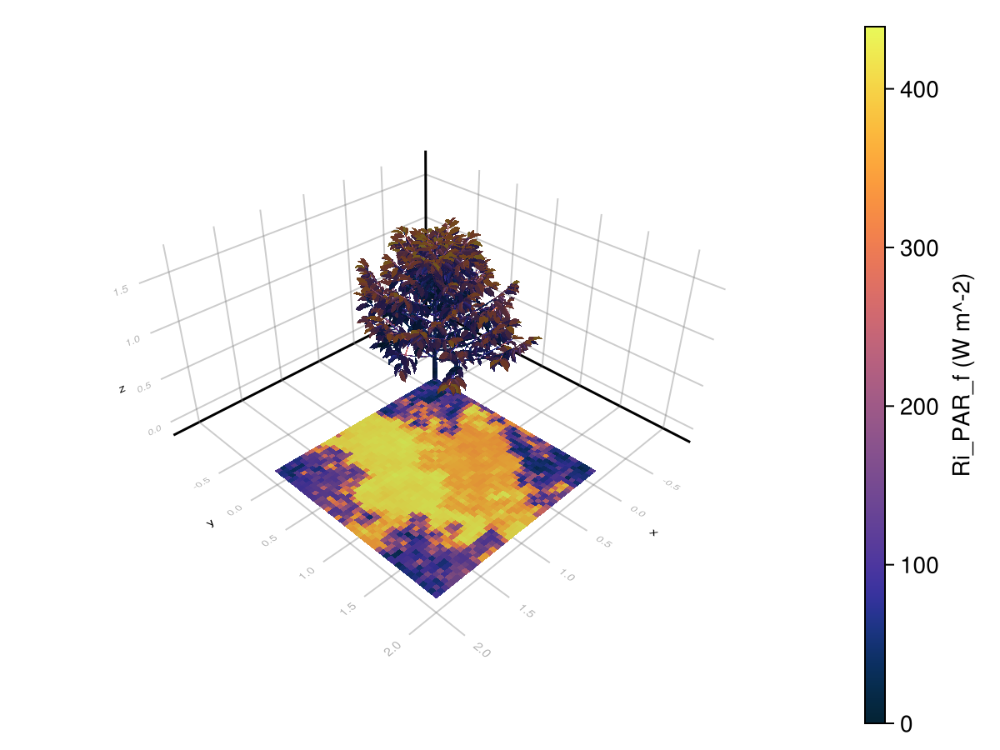
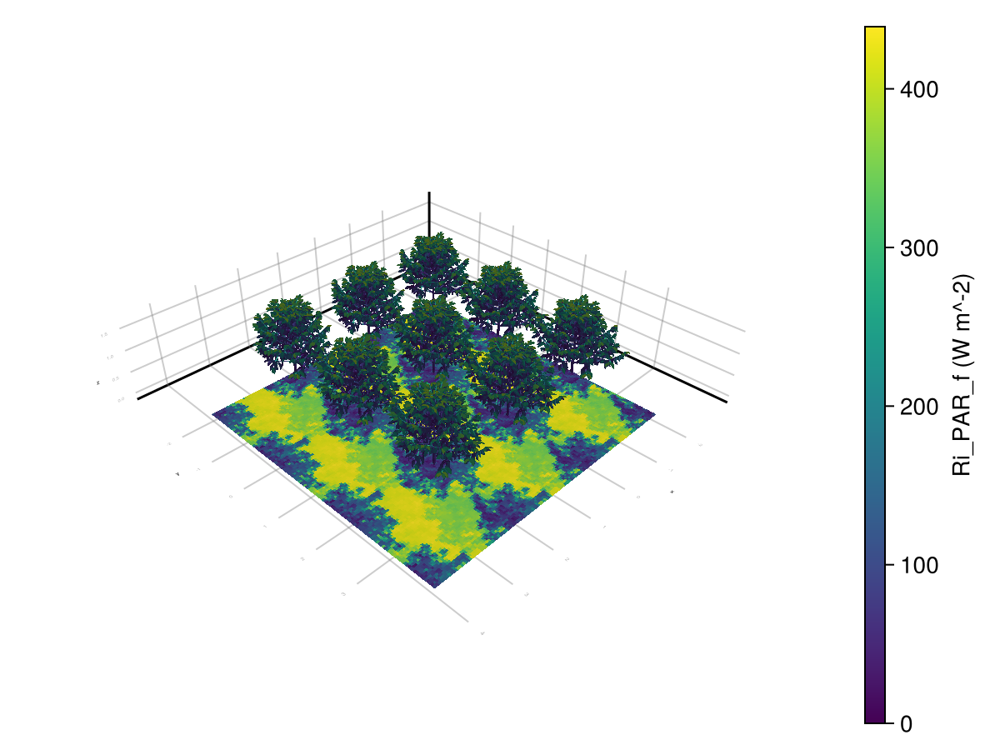
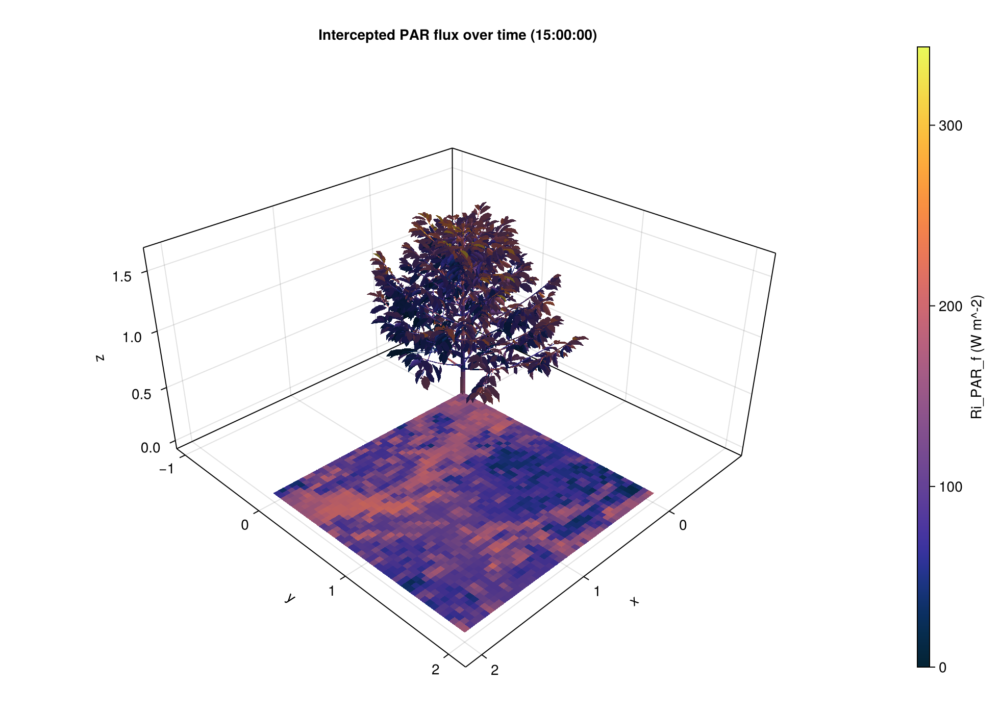

Getting Started
This page is the shortest path to your first light simulation. It uses the bundled coffee example from example_2/, which is also the source of the image on the home page. Here is how to plot it:
using CairoMakie, PlantGeom
repo_root = normpath(joinpath(dirname(pathof(ArchimedLight)), ".."))
ops_path = joinpath(repo_root, "example_2", "scene", "coffee.ops")
scene_preview = read_scene(ops_path)
plantviz(scene_preview.mtg, color = Dict("Mesh0" => :gray87, "Mesh1" => "#42A25ABD"))
What This Example Covers
- reading parameters from files, using a
config.ymlas the single source of truth for file paths and model options - loading a scene from
.opsand.opf - loading functional-group models from YAML
- reading one meteo step
- running one light step
- attaching
Ri_PAR_fto the scene for visualization or export
Minimal Run
using ArchimedLight
repo_root = normpath(joinpath(dirname(pathof(ArchimedLight)), ".."))
config = joinpath(repo_root, "example_2", "config.yml")
sim, meteo = read_simulation(config)
scene = sim.scene
models = sim.models
options = sim.options
row = first(meteo)
step = run_light(sim, row)LightStepResult
------------------------------------------------------------
sky PAR 463.139 W m^-2 | NIR 501.734 W m^-2
sun azimuth 309.4° | elevation 76.5°
mix direct 73.5% | diffuse 26.5% | SW 964.872 W m^-2
turtle 16 sectors (sky=16, sun=0)
------------------------------------------------------------
incident PAR 3.724 MJ | NIR 9.594 MJ
absorbed PAR 3.165 MJ | NIR 959.362 kJ
scattering on | iterations 13 | converged true
added PAR 297.823 kJ | NIR 5.882 MJ
------------------------------------------------------------
The result is a LightStepResult. The most useful field at first is step.budget, which groups values by:
- quantity:
incidentorabsorbed - form:
flux(W m^-2) orenergy(Jper component per step) - stage:
initialfor first-order only,totalfor first-order plus scattering - waveband:
par,nir, and any extra shortwave bands present in the meteo file
Attach Results Back Onto The Scene
ArchimedLight.jl keeps the simulation results in the LightStepResult by default. If you want an inspectable scene, attach selected outputs back onto the MTG:
sky_options = LightOptions(options; include_sky_fraction=true)
sim_with_sky = LightSimulation(scene, models; options=sky_options)
step_with_sky = run_light(sim_with_sky, row)
attach_light_step!(
scene,
step_with_sky;
fields=[:area, :incident_par_flux, :incident_par_energy, :absorbed_par_energy, :sky_fraction],
)/ 1: Scene
├─ / 2: Individual
│ └─ / 3: Axis
│ ├─ / 4: Metamer
│ ├─ < 5: Metamer
│ ├─ < 6: Metamer
│ ├─ < 7: Metamer
│ ├─ < 8: Metamer
│ ├─ < 9: Metamer
│ ├─ < 10: Metamer
│ ├─ < 11: Metamer
│ │ ├─ + 12: Axis
│ │ │ ├─ / 13: Metamer
│ │ │ ├─ < 14: Metamer
│ │ │ ├─ < 15: Metamer
│ │ │ ├─ < 16: Metamer
│ │ │ ├─ < 17: Metamer
│ │ │ ├─ < 18: Metamer
│ │ │ ├─ < 19: Metamer
│ │ │ │ └─ + 20: Axis
│ │ │ │ ├─ / 21: Metamer
│ │ │ │ ├─ < 22: Metamer
│ │ │ │ ├─ < 23: Metamer
│ │ │ │ ├─ < 24: Metamer
…This way you can inspect the results using the powerful MTG query system, or save the results to disk with the topology and geometry of the original scene:
out_path = joinpath(mktempdir(), "coffee_step.opf")
write_scene(out_path, scene)
out_path"/tmp/jl_vaYJcj/coffee_step.opf"The attached node attributes use the standard ARCHIMED names:
:incident_par_flux->Ri_PAR_f:incident_par_energy->Ri_PAR_q:absorbed_par_energy->Ra_PAR_q:sky_fraction->sky_fraction:area->area
Plotting the results
You can plot the results using PlantGeom.jl + Makie.jl:
using PlantGeom, CairoMakie
fig, ax, p = plantviz(
scene.mtg;
color=:Ri_PAR_f,
colormap=:thermal,
colorrange=(0.0, maximum(values(step.budget.incident_flux.total.par))), # This is automatic by default, but we set it explicitly here to show how to control it.
figure=(size=(980, 700),),
)
PlantGeom.colorbar(fig[1, 2], p, label="Ri_PAR_f (W m^-2)")
fig
If you do not want to reattach values onto the MTG just for visualization, ArchimedLight.jl also provides a helper that plots directly from the LightStepResult (this is more performant):
fig2, ax2, p2 = lightplot(
step;
color=:incident_par_flux,
colormap=:thermal,
)
Colorbar(fig2[1, 2], p2.plots[1], label="Ri_PAR_f (W m^-2)")
fig2
If you want to visualize the same toric result as a repeated tile, build a tiled render geometry from the scene plot bounds and reuse the same light result:
tiled = tile_light_geometry(scene, step; nx=3, ny=3)
fig_inf, ax_inf, p_inf = lightplot(tiled, step; color=:incident_par_flux)
Colorbar(fig_inf[1, 2], p_inf.plots[1], label="Ri_PAR_f (W m^-2)")
fig_inf
For a time series, we can generate the plot once and update timestep to inspect any simulated hour. Each LightStepResult supplies its own stored render geometry, so this also works for a series assembled from scenes that changed between simulation steps:
# Generating a series of meteo row to simulate a day:
meteo = PlantMeteo.TimeStepTable(
[
(
date=Date(2020, 6, 21),
hour_start=Time("06:00:00") + Hour(i-1),
duration=Hour(1),
latitude=15.0,
clearness=0.6,
)
for i in 1:10],
(latitude=15.0, file="interactive",),
)
update_options!(sim, LightOptions(turtle_sectors=16, all_in_turtle=true, radiation_timestep_minutes=5, pixel_size=0.003, toricity=true))
series = run_light(sim, meteo)
fig = Figure(resolution=(980, 700))
ax = Axis3(fig[1, 1], title="Intercepted PAR flux over time (06:00)", azimuth=π/4, elevation = π/6, aspect=:data, perspectiveness= 0.4)
p = lightplot!(ax, series; color=:Ri_PAR_f, colormap=:thermal)
Colorbar(fig[1, 2], p.plots[1], label="Ri_PAR_f (W m^-2)")
p[:timestep][] = length(series)
ax.title[] = "Intercepted PAR flux over time ($(Time("06:00") + Hour(length(series)-1)))"
fig
When colorrange is left automatic on a series plot, lightplot(series) uses one color scale for the whole series so the same value maps to the same color at every timestep.
The toricity parameter is activated here, this is why we see the shade of the coffee plant coming from all corners, because light that goes out of the scene on one side comes back in on the other side. This is done for simulating an infinite canopy, but it can be turned off with toricity=false in the config.
What To Read Next
- Beginner Workflows shows file-based, interactive, and coupled-model usage.
- File-Based Workflow explains how the example directory is organised and how each file contributes to the simulation.
- Interactive Workflow shows how to build a scene directly in Julia and run light on it without
.ops/.opfinput files. - Configuration And Options Reference lists the configuration keys that the current Julia package actually uses.
One Important Difference From The Historical Java App
The coffee example still contains several Java-era keys related to outputs, photosynthesis, and energy balance. ArchimedLight.jl keeps reading the light configuration and the input file paths, but the package documented here is currently the light-only core. For current behavior, prefer the reference pages on this site over older Java screenshots or YAML examples.